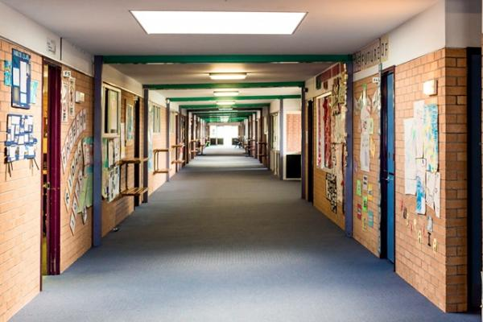

Suicide in schools: Information for parents

Download the suicide in schools info for parents factsheet
Exposure to suicide can be a traumatic experience.
It can have a profound emotional effect not only on family and friends, but on students, school staff, parents and the whole community. Below is some information that may be helpful in assisting you as you support a young person during this difficult time.
Young people respond to suicide in a range of ways, and a wide range of reactions is possible
How a young person responds to a suicide will be influenced by their age, developmental stage, personality, relationship with the deceased person and what is happening in their life. Common, normal grief reactions include:
• Shock, disbelief, confusion or numbness
• Guilt or blame
• Sadness, feelings of betrayal or abandonment
•Anxiety, fears, or nightmares
• Preoccupation with thoughts of the person who has died; trying to make sense of the death and understand why it happened
• Withdrawal from others
• Irritability, anger or aggression
• Difficulty concentrating
• Changes to sleep patterns, appetite, energy and enjoyment of activities.
Young people need to find safe ways of expressing their feelings, whatever their age. Parental understanding, reassurance and attention are very important at this time. Be guided by the young person’s need to talk, and make it clear to them that you will be available whenever they need you.
Young people who have experienced other stressful situations in their lives may find it harder to cope
Experiencing stressful situations, including the separation/divorce of parents, the death of a relative/pet and moving house/school, can affect how someone copes with new stresses. They may become upset and need to express their feelings about these other concerns, even if they had appeared to be coping. If a young person is already using the services of a psychologist or psychiatrist, inform them of the suicide
Some reactions can happen weeks, months or a year after an event
If you are concerned about your child’s reaction and behaviour (such as changes in their socialising or school work) it is important to speak to the school Principal or student counsellor or a GP. This may result in a referral to a counsellor for a mental health and/or risk assessment.
What young people need to know
The school will have provided students with information about the incident but they may want to know exactly what happened. Details about the way a suicide occurred will not be given to students, as this information is potentially harmful to their wellbeing. As parents, it is important to steer discussion towards the positive “helpseeking” actions that young people can take when they are struggling. This includes talking to a trusted adult, such as a parent, counsellor, teacher, relative or friend.
“Tell an adult if you are worried about a friend”
‘Ask for help’ is an important message to share with young people in any discussion about suicide. Young people sometimes share their feelings about death with friends – in conversations, letters, emails, text messages and on the internet. If they suspect a friend may be about to hurt themselves, they should tell an adult immediately
Respond to community concern with respect
Suicide can have a profound emotional effect not only on family and friends, but on the whole community. When you speak with other members of the community:
• Respect the bereaved/affected family
• Take care not to give the impression that suicide was a positive outcome for the young person (glamourising/ sensationalising suicide)
• Encourage help-seeking actions in young people
Be aware that young people may be affected by the media’s responses to the event
Research has shown that the way suicide is reported in the media is important. Some types of media coverage can increase the risk of suicide in vulnerable people. You may decide to protect your family against certain coverage or you may choose to watch the news together. By watching the news together you can discuss any concerns and ensure everyone feels supported.
Managing the media
Sometimes following a youth suicide the media may approach parents directly for comment. This may happen even if you don’t have any connection to the student. In these circumstances it is important to understand that you are under no obligation to speak to the media. If you do feel like speaking it’s important to keep your comments brief and reinforce some principles regarding the reporting of suicide as outlined below:
• Highlight the relationship between suicide and mental illness
• Encourage reporters to raise public awareness of the risk factors and warning signs of suicide, as well as the actions that can be taken to help a suicidal person
• Encourage reporters to provide their readers/listeners with information about local support services, local mental health services and crisis support numbers
• Tell the media not to include pictures of the death scene or distressed mourners
• Focus on how the suicide has impacted the community.
In these circumstances avoid:
• Giving details of the method of suicide
• Glamourising the victim or the suicide itself; take care not to give the impression that suicide was a positive outcome for the young person.
• Oversimplifying the cause of suicide. Suicide is rarely the result of a single factor or event. Most people who die by suicide have had a history of problems, which may not get reported in the aftermath of the suicide.
You can seek advice from the school before speaking to the media, however, if you’ve already spoken, it’s important that you inform the school of this.
Be aware that school staff will also be affected
While everyone will be working towards normalising school routines some staff will be managing difficult emotions. Adult counselling support is available to all school staff through the Department of Education and other relevant bodies.
Be aware of social media activity
Following a suicide, young people are likely to turn to social media for a variety of purposes. These include sending news out about a death (both accurate and rumoured), posting online messages (both appropriate and inappropriate), calling for impromptu gatherings and creating virtual memorials.
It’s important to talk with your young person about social media activity and how it might be impacting on them (e.g seeing upsetting messages). Talk to them about how to manage this and negotiate boundaries around their use of social media if necessary. If you are concerned about messages you see or hear about on social media sites, let someone know. This could be the young person’s parents, local authorities, emergency services or the relevant school Principal or counsellor.
Where can parents and young people get more information and help?
• headspace centres provide support, information and advice to young people aged 12 to 25 – headspace.org.au
• eheadspace provides online counselling and telephone support to young people aged 12 to 25 – eheadspace.org.au 1800 650 890
• Kids Helpline is a 24-hour telephone and online counselling service for young people aged 5 to 25 – kidshelpline.com.au 1800 55 1800
• Lifeline is a 24-hour telephone counselling service – lifeline.org.au 13 11 14 • Suicide Call Back Service 1300 659 467 www.suicidecallbackservice.org.au
• Your GP
• A psychologist or counsellor (your GP can refer you)
Acknowledgements
American Foundation for Suicide Prevention and Suicide Prevention Resource Center. (2011). After a Suicide: A Toolkit for Schools. Newton, MA: Education Development Center, Inc. | Mindframe National Media Initiative in Australia, access through mindframe-media.info | South Australia Department of Education and Children’s Services, Catholic Education South Australia and Association of Independent Schools. (2010). Suicide Postvention Guidelines: a framework to assist staff in supporting their school communities in responding to suspected, attempted or completed suicide. South Australia: Government of South Australia, Department of Education and Children’s Services